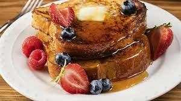

French Toast

Description
To make good french toast, you must use the proper type of bread, in this recipe we will be using regular white bread as it absorbs the eggs perfectly, which will help us get the juicy and creamy texture we are looking for.
Ingredients
- Regular white bread
- 3-4 whole eggs
- Butter
- Cinnamon
- Sugar or sweetener
Steps
- Crack the eggs into a flat container
- Add cinnamon and sugar to taste
- Throw a couple of nobs of butter in a skillet or frying pan
- Cook under low-medium heat until golden brown on both sides
- Serve with a dash of maple syrup or syrup of choice